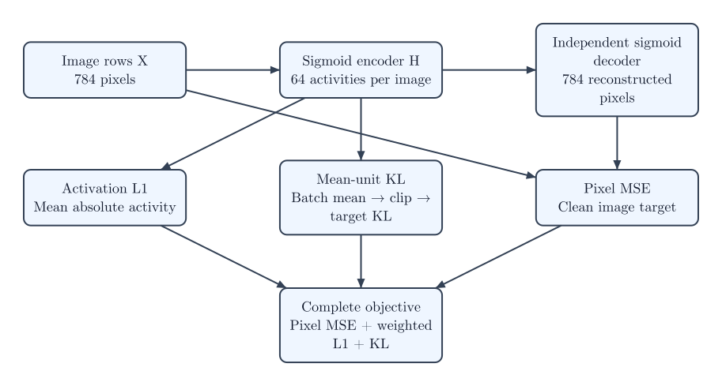
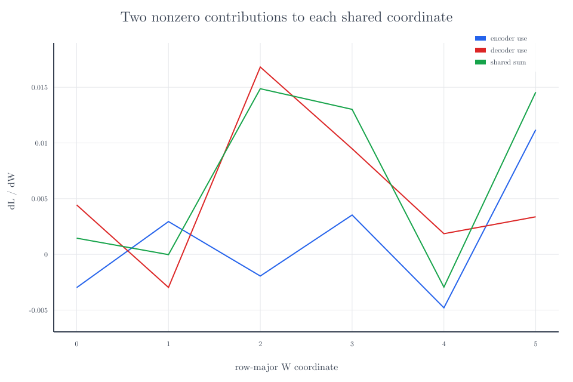
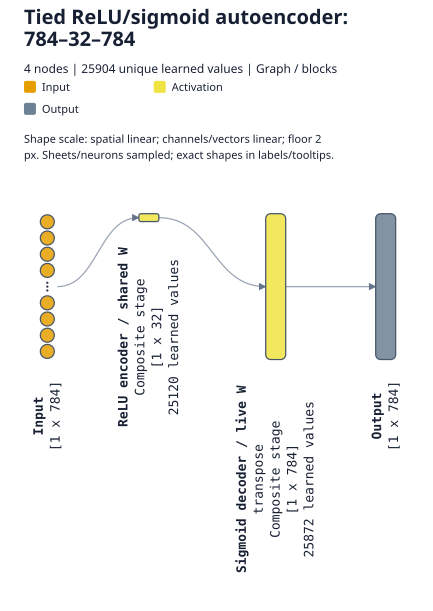
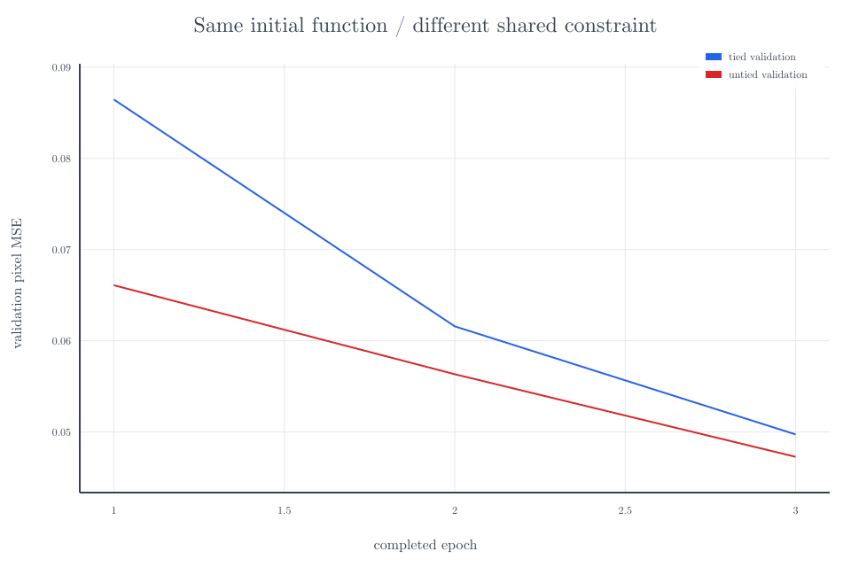
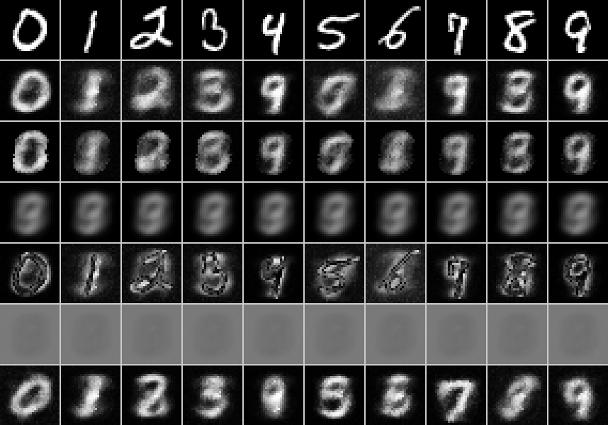

Tied Autoencoders: One Matrix, Two Gradient Paths
Abstract
Weight tying constrains a decoder matrix to the live transpose of its encoder matrix. This report derives the two contributions to the shared gradient, checks them on a small hand calculation, then trains the original 784–32–784 ReLU/sigmoid MNIST model and a matched untied control. Both start with identical codes and predictions and receive ninety-six Adam updates. The tied model has 25,904 independent scalars against 50,992 for the control; held-out MSE is 0.04965 and 0.04900 respectively, versus 0.06780 for the fitting mean. The comparison illustrates a shared constraint under one short seed/budget, not equal capacity, a general ranking, a classifier or a measured compression bitrate.
A constraint on one parameter, not a copied initialization
For row inputs X with d features, encoder W has shape [d,k]. Define
The [Theano autoencoder tutorial](https://deeplearningtutorials.readthedocs.io/en/latest/dA.html) implements a shared W and symbolic W transpose. This report retains the migrated experiment's ReLU code, ordinary Glorot weights and mean squared error without corruption. A transpose is not generally an inverse: neither W transpose W nor W W transpose must be identity, and ReLU can discard information. The independent control initially copies the numerical transpose, then trains its decoder as a separate leaf. Copying initial values alone does not enforce tying.
#include <dm/dm.hpp>
int main() {
std::filesystem::create_directories("build");
dm::graphics::Diagram d(52, 1100);
d.node("x", {0, 0}, "Image rows X\n784 pixels")
.node("h", {6, 0}, "ReLU code H\n32 activities")
.node("r", {12, 0}, "Sigmoid reconstruction R\n784 raw pixels")
.node("w", {6, 3}, "ONE encoder/W parameter\n25,088 shared coordinates")
.node("e", {0, -3}, "Encoder gradient contribution\nX transpose · encoder delta")
.node("d", {12, -3}, "Decoder gradient contribution\ndecoder delta transpose · H")
.node("g", {6, -6}, "Sum both contributions\nONE Adam state per W coordinate")
.edge("x", "h")
.edge("h", "r")
.edge("w", "h", "W")
.edge("w", "r", "live W transpose")
.edge("h", "e")
.edge("r", "d")
.edge("e", "g")
.edge("d", "g")
.save_svg("build/tied_method.svg");
}
The canonical models::TiedAutoencoder returns owning encoder_weight, decoder_weight, code
and reconstruction handles. With tied=true there is no decoder/W leaf. Every call takes a live
transpose without detaching it; autograd sums both paths. A store containing an independent
decoder/W is rejected in tied mode. Width/input/dtype checks precede creation; incompatible
existing shapes can fail later. Finite Float32/64 rows and strides are supported; stored or
computed nonfinite values are not sanitized. Fitting, selection and matching are caller policy.
The shared gradient and a hand-checkable example
Let Z=XW+b_e and \(E=2(R-X)\odot R\odot(1-R)/(Bd)\). At positive ReLU preactivations, or with the implementation's zero derivative at Z≤0, set \(A=(EW)\odot\mathbf1\{Z>0\}\). Then
For d=3,k=2 use W rows [0.2,0.1], [−0.3,0.4], [0.5,−0.2], b_e=[0.1,0.2], b_d=[−0.1,0.05,0.2], and X rows [0.1,0.2,0.7], [0.8,0.3,0.4]. The code rows are [0.41,0.15] and [0.37,0.32]. Their reconstruction rows are approximately [0.49925,0.49675,0.59267] and [0.50150,0.51674,0.57957]. The nonzero vector [−0.14,0.09,0.11] has zero product with W, so sufficiently small perturbations along it preserve the code and reconstruction: the transpose cannot invert all inputs. All code preactivations here are positive, so the derivative avoids the ReLU kink. The program checks all four code values, six predictions and eleven derivatives against scalar arithmetic.
#include <dm/dm.hpp>
int main() {
namespace n = dm::nn;
const auto type = n::DType::Float64;
n::ParameterStore p(1861, type);
const std::vector<double> w{.2, .1, -.3, .4, .5, -.2}, eb{.1, .2}, db{-.1, .05, .2},
v{.1, .2, .7, .8, .3, .4};
const auto x = n::from_vector(v, {2, 3});
n::models::TiedAutoencoder(p, x, 3, 2);
p.set("encoder/W", n::from_vector(w, {3, 2}));
p.set("encoder/b", n::from_vector(eb, {2}));
p.set("decoder/b", n::from_vector(db, {3}));
const auto net = n::models::TiedAutoencoder(p, x, 3, 2);
const auto shifted = x + .5 * n::tile(n::tensor({-.14, .09, .11}, {1, 3}, type), {2, 1});
const auto same_code = n::models::TiedAutoencoder(p, shifted, 3, 2);
if (n::max(n::abs(net.code - same_code.code)).item() > 1e-14 ||
n::max(n::abs(net.reconstruction - same_code.reconstruction)).item() > 1e-14)
return 1;
const auto loss = n::mse(net.reconstruction, x);
const auto g = n::grad(loss, p.parameters());
std::vector<double> enc(6), dec(6), ge(2), gd(3);
double mse = 0;
for (int b = 0; b < 2; ++b) {
double h[2] = {eb[0], eb[1]}, delta[3];
for (int j = 0; j < 2; ++j) {
for (int i = 0; i < 3; ++i)
h[j] += v[3 * b + i] * w[2 * i + j];
if (h[j] <= 0 || std::abs(h[j] - net.code.at({b, j})) > 1e-14)
return 1;
}
for (int i = 0; i < 3; ++i) {
double z = db[i];
for (int j = 0; j < 2; ++j)
z += h[j] * w[2 * i + j];
double y = 1 / (1 + std::exp(-z)), error = y - v[3 * b + i];
mse += error * error / 6;
if (std::abs(y - net.reconstruction.at({b, i})) > 1e-14)
return 1;
delta[i] = error * y * (1 - y) / 3;
gd[i] += delta[i];
for (int j = 0; j < 2; ++j)
dec[2 * i + j] += delta[i] * h[j];
}
for (int j = 0; j < 2; ++j) {
double a = 0;
for (int i = 0; i < 3; ++i)
a += delta[i] * w[2 * i + j];
ge[j] += a;
for (int i = 0; i < 3; ++i)
enc[2 * i + j] += v[3 * b + i] * a;
}
}
if (p.count() != 11 || std::abs(loss.item() - mse) > 1e-14)
return 1;
for (int j = 0; j < 2; ++j)
if (std::abs(g[1].at({j}) - ge[j]) > 1e-14)
return 1;
for (int i = 0; i < 3; ++i)
if (std::abs(g[2].at({i}) - gd[i]) > 1e-14)
return 1;
std::vector<double> total, indices{0, 1, 2, 3, 4, 5};
std::print(
"Hand MSE {:.9f}; code {}.\n\n| W coordinate | encoder path | decoder path | sum "
"|\n|---:|---:|---:|---:|\n",
loss.item(),
net.code.values_str());
for (int i = 0; i < 6; ++i) {
total.push_back(enc[i] + dec[i]);
if (std::abs(g[0].at({i / 2, i % 2}) - total[i]) > 1e-14)
return 1;
std::print("| {} | {:.8f} | {:.8f} | {:.8f} |\n", i, enc[i], dec[i], total[i]);
}
auto plot = dm::graphics::RPlot::create();
plot.lines(indices, enc, "encoder use", {37, 99, 235}, 2)
.lines(indices, dec, "decoder use", {220, 38, 38}, 2)
.lines(indices, total, "shared sum", {22, 163, 74}, 2)
.x_label("row-major W coordinate")
.y_label("dL / dW")
.title("Two nonzero contributions to each shared coordinate")
.save_svg("build/tied_toy.svg");
}Hand MSE 0.071217726; code [[0.41, 0.15], [0.37, 0.32]].
| W coordinate | encoder path | decoder path | sum |
|---|---|---|---|
| 0 | -0.00298425 | 0.00443734 | 0.00145309 |
| 1 | 0.00294434 | -0.00296931 | -0.00002498 |
| 2 | -0.00194506 | 0.01681397 | 0.01486890 |
| 3 | 0.00353282 | 0.00948257 | 0.01301539 |
| 4 | -0.00479601 | 0.00185520 | -0.00294080 |
| 5 | 0.01118692 | 0.00337163 | 0.01455855 |

For an untied decoder D the derivatives are X transpose A for W and H transpose E for D. Even starting at D=W transpose, separate Adam updates generally break that equality. Adam of the shared gradient sum is not the sum of two independent Adam updates: each first and second moment is computed from the combined derivative, including its squared cross term.
Full geometry and independent parameter count
The tied census is dk+k+d=25,904; untied adds dk=25,088, giving 50,992. Biases are not tied. The following graph traces the real code and decoder branches, counting each shared leaf once.
#include <dm/dm.hpp>
int main() {
namespace n = dm::nn;
n::ParameterStore p(1853);
n::Module model(
[&](const n::Tensor& x) {
auto out = n::models::TiedAutoencoder(p, x);
n::model_stage("ReLU encoder / shared W", x, out.code);
n::model_stage("Sigmoid decoder / live W transpose", out.code, out.reconstruction);
return out.reconstruction;
},
"Tied ReLU/sigmoid autoencoder: 784–32–784");
n::ModelPlotOptions options;
options.style = n::ModelPlotStyle::Graph;
options.detail = n::ModelPlotDetail::Blocks;
options.max_neurons = 8;
options.sizing.spatial_scale = n::ModelPlotScale::Linear;
options.sizing.channel_scale = n::ModelPlotScale::Linear;
options.sizing.minimum_extent = 2;
options.sizing.max_planes = 6;
const auto figure = model.plot(n::zeros({1, 784}), options);
if (p.count() != 25904 || p.size() != 3 || figure.parameter_count() != 25904 ||
p.contains("decoder/W"))
return 1;
figure.save_svg("build/tied_architecture.svg");
std::print("| parameter | scalars |\n|---|---:|\n");
for (const auto& name : p.names())
std::print("| {} | {} |\n", name, p.at(name).numel());
}| parameter | scalars |
|---|---|
| encoder/W | 25088 |
| encoder/b | 32 |
| decoder/b | 784 |

Native data preparation and untouched partitions
The native loader prepares the original MNIST IDX assets and balanced disjoint pools of 1,000 fitting,200 validation and200 official-test images. Each class contributes100/20/20. Inputs are Float32 [0,1] pixels with original28×28 geometry; flattening does not resize or normalize again. Source IDs and provenance are saved. Labels only choose gallery columns.
#include <dm/dm.hpp>
int main() {
namespace n = dm::nn;
std::filesystem::create_directories("build");
const std::filesystem::path cache = dm::datasets::data_home();
dm::datasets::prepare_example_data("mnist-assets", cache.string());
const auto pools = n::models::LoadSaliency(cache / "saliency");
n::NamedTensors data;
std::print("| pool | images | geometry |\n|---|---:|---|\n");
for (int i = 0; i < 3; ++i) {
const std::string name = i == 0 ? "fit" : i == 1 ? "validation" : "test";
data.emplace_back(name + "_images", pools[i].images);
data.emplace_back(name + "_source_ids", pools[i].source);
if (i == 2)
data.emplace_back("test_labels", pools[i].labels);
std::print("| {} | {} | 28 ×28 ×1 |\n", name, pools[i].images.size(0));
}
n::save_npz("build/tied_data.npz", data);
std::filesystem::copy_file(
cache / "saliency" / "manifest.json",
"build/tied_data_manifest.json",
std::filesystem::copy_options::overwrite_existing);
}| pool | images | geometry |
|---|---|---|
| fit | 1000 | 28 ×28 ×1 |
| validation | 200 | 28 ×28 ×1 |
| test | 200 | 28 ×28 ×1 |
Two complete explicit fitting loops from the same initial function
Both models use seed1853 and start with exactly the same encoder and biases; the untied matrix is explicitly set to the original encoder transpose. Equal seeds alone would not match decoder biases and weights after different parameter creation. All initial code and reconstruction values of the first eight fitting rows must agree bit for bit.
Each variant uses Adam(.003,β1=.9,β2=.999,ε=1e-8), three epochs, batch32, order seed1867 and96 updates including a final eight-image minibatch. Every step recomputes the live tied transpose and checks all25,088 coordinates after the update. Completed epochs1–3 are eligible; epoch zero is measured and saved as a control but is not a checkpoint candidate. Both variants select independently on the same full validation pixel MSE, computed with Float64 errors from Float32 predictions. Test pixels never select weights. The reported fitting curve is the row-weighted mean of pre-update batch losses, not a post-epoch full fit.
#include <dm/dm.hpp>
int main() {
namespace n = dm::nn;
std::map<std::string, n::Tensor> data;
for (const auto& [key, value] : n::load_npz("build/tied_data.npz"))
data.emplace(key, value);
const auto fit = data.at("fit_images").reshape({1000, 784}),
validation = data.at("validation_images").reshape({200, 784});
const auto source = data.at("fit_source_ids").to_vector<int>();
n::ParameterStore shared(1853), independent(1853);
{
n::NoGradGuard guard;
n::models::TiedAutoencoder(shared, n::zeros({1, 784}));
n::models::TiedAutoencoder(independent, n::zeros({1, 784}), 784, 32, false);
}
for (const auto& name : shared.names())
independent.set(name, shared.at(name).detach().clone());
independent.set("decoder/W", n::transpose(shared.at("encoder/W"), {1, 0}).contiguous());
{
n::NoGradGuard guard;
const auto input = n::take_rows(fit, {0, 1, 2, 3, 4, 5, 6, 7});
const auto a = n::models::TiedAutoencoder(shared, input),
b = n::models::TiedAutoencoder(independent, input, 784, 32, false);
if (!n::equal_bits(a.code, b.code) || !n::equal_bits(a.reconstruction, b.reconstruction))
return 1;
n::save_npz(
"build/tied_initial_forward.npz",
{{"images", input.reshape({8, 28, 28, 1})},
{"tied_code", a.code},
{"untied_code", b.code},
{"tied_reconstruction", a.reconstruction},
{"untied_reconstruction", b.reconstruction}});
}
auto score = [](const n::Tensor& a, const n::Tensor& b) {
return n::mean(n::square(n::cast(a, n::DType::Float64) - n::cast(b, n::DType::Float64))).item();
};
auto plot = dm::graphics::RPlot::create();
std::print(
"| variant | epoch | pre-update fitting MSE | validation MSE |\n|---|---:|---:|---:|\n");
for (int variant = 0; variant < 2; ++variant) {
bool tied = variant == 0;
auto& p = tied ? shared : independent;
const std::string prefix = tied ? "build/tied_tied" : "build/tied_untied";
if (p.count() != (tied ? 25904 : 50992) || p.size() != (tied ? 3u : 4u))
return 1;
p.save(prefix + "_initial.npz");
n::OptimizerConfig config;
config.kind = n::OptimizerKind::Adam;
config.beta1 = .9;
config.beta2 = .999;
config.epsilon = 1e-8;
n::Optimizer optimizer(p, .003, config);
n::BatchOrder order(1000, 32, 1867);
std::ofstream batches(prefix + "_batches.tsv");
batches << "epoch\tstep\trow\tsource_id\n";
std::vector<double> epochs, training, valid;
double best = std::numeric_limits<double>::infinity();
int selected = 0, updates = 0;
{
n::NoGradGuard guard;
const auto initial = n::models::TiedAutoencoder(p, validation, 784, 32, tied);
n::save_npz(prefix + "_epoch0_validation.npz", {{"prediction", initial.reconstruction}});
p.save(prefix + "_epoch0.npz");
}
for (int epoch = 1; epoch <= 3; ++epoch) {
order.begin_epoch();
double total = 0;
int seen = 0;
for (;;) {
const auto rows = order.next();
if (rows.empty())
break;
const auto x = n::take_rows(fit, rows);
const auto net = n::models::TiedAutoencoder(p, x, 784, 32, tied);
const auto loss = n::mean(n::square(net.reconstruction - x));
if (updates == 0) {
n::GradOptions keep;
keep.retain_graph = true;
const auto gradients = n::grad(loss, p.parameters(), keep);
n::NamedTensors saved;
for (std::size_t i = 0; i < gradients.size(); ++i) {
const auto values = gradients[i].to_vector<float>();
if (std::any_of(
values.begin(), values.end(), [](float v) { return !std::isfinite(v); }) ||
n::sum(n::square(gradients[i])).item() <= 0)
return 1;
saved.emplace_back(p.names()[i], gradients[i]);
}
n::save_npz(prefix + "_first_gradients.npz", saved);
n::save_npz(prefix + "_first_batch.npz", {{"images", x.reshape({x.size(0), 28, 28, 1})}});
}
const double value = loss.item();
if (!std::isfinite(value) || value < 0)
return 1;
optimizer.minimize(loss);
total += rows.size() * value;
seen += int(rows.size());
for (auto row : rows)
batches << epoch << '\t' << updates << '\t' << row << '\t' << source[row] << '\n';
if (tied) {
n::NoGradGuard guard;
const auto actual = n::models::TiedAutoencoder(p, n::zeros({1, 784}));
if (p.contains("decoder/W") || p.size() != 3 ||
!n::equal_bits(actual.decoder_weight, n::transpose(p.at("encoder/W"), {1, 0})))
return 1;
}
if (updates == 0)
p.save(prefix + "_first_update.npz");
++updates;
}
n::NoGradGuard guard;
const auto out = n::models::TiedAutoencoder(p, validation, 784, 32, tied);
const double metric = score(out.reconstruction, validation);
if (seen != 1000 || !std::isfinite(metric))
return 1;
n::save_npz(
prefix + "_epoch" + std::to_string(epoch) + "_validation.npz",
{{"prediction", out.reconstruction}});
p.save(prefix + "_epoch" + std::to_string(epoch) + ".npz");
if (metric < best) {
best = metric;
selected = epoch;
p.save(prefix + "_best.npz");
}
epochs.push_back(epoch);
training.push_back(total / seen);
valid.push_back(metric);
std::print(
"| {} | {} | {:.9f} | {:.9f} |\n", tied ? "tied" : "untied", epoch, total / seen, metric);
}
if (updates != 96 || optimizer.iterations() != 96 || !batches)
return 1;
n::save_npz(
prefix + "_selection.npz",
{{"epoch", n::full({}, selected, n::DType::Int32)},
{"validation_mse", n::full({}, best, n::DType::Float64)},
{"fit_path", n::from_vector(training, {3})},
{"validation_path", n::from_vector(valid, {3})}});
plot.lines(
epochs,
valid,
tied ? "tied validation" : "untied validation",
tied ? dm::graphics::RGB{37, 99, 235} : dm::graphics::RGB{220, 38, 38},
2);
std::print(
"Selected {} epoch{} from completed epochs only.\n\n", tied ? "tied" : "untied", selected);
}
plot.x_label("completed epoch")
.y_label("validation pixel MSE")
.title("Same initial function / different shared constraint")
.save_svg("build/tied_learning.svg");
}| variant | epoch | pre-update fitting MSE | validation MSE |
|---|---|---|---|
| tied | 1 | 0.134767467 | 0.086454725 |
| tied | 2 | 0.073534941 | 0.061581136 |
| tied | 3 | 0.055713183 | 0.049729135 |
Selected tied epoch3 from completed epochs only.
| untied | 1 | 0.104497494 | 0.066088224 |
| untied | 2 | 0.065448693 | 0.056330213 |
| untied | 3 | 0.054795291 | 0.047270703 |
Selected untied epoch3 from completed epochs only.

Fresh restore, standalone decoding and frozen controls
Only the selected matrix/matrices and biases are loaded into new stores. The standalone decoder consumes code, not the source image or target. Repeat and encode/decode outputs must be bit identical; single/batch inference agrees within1e-6 and all parameter bytes stay unchanged. Zero codes remove encoder information; cyclic row shifts preserve the multiset of codes but misalign each code with its own target. The constant pixel mean is fitted only on the1,000 training rows, accumulating in Float64 before narrowing once to Float32.
#include <dm/dm.hpp>
int main() {
namespace n = dm::nn;
std::map<std::string, n::Tensor> data;
for (const auto& [key, value] : n::load_npz("build/tied_data.npz"))
data.emplace(key, value);
const auto fit = data.at("fit_images").reshape({1000, 784}),
test = data.at("test_images").reshape({200, 784});
const auto pixel_mean = n::cast(n::mean(n::cast(fit, n::DType::Float64), {0}), n::DType::Float32);
const auto mean = n::tile(pixel_mean.reshape({1, 784}), {200, 1}).contiguous();
n::NamedTensors gallery{
{"test_images", test},
{"test_labels", data.at("test_labels")},
{"test_source_ids", data.at("test_source_ids")},
{"mean_reconstruction", mean}};
auto score = [](const n::Tensor& a, const n::Tensor& b) {
return n::mean(n::square(n::cast(a, n::DType::Float64) - n::cast(b, n::DType::Float64))).item();
};
std::print(
"| variant / control | test MSE |\n|---|---:|\n| fitting pixel mean | {:.9f} |\n",
score(mean, test));
for (bool tied : {true, false}) {
const std::string name = tied ? "tied" : "untied", prefix = "build/tied_" + name;
n::ParameterStore p(1853);
{
n::NoGradGuard guard;
n::models::TiedAutoencoder(p, n::zeros({1, 784}), 784, 32, tied);
}
p.load(prefix + "_best.npz");
n::NamedTensors before;
for (const auto& key : p.names())
before.emplace_back(key, p.at(key).detach().clone());
n::NoGradGuard guard;
n::NamedTensors outputs;
const auto selection = n::load_npz(prefix + "_selection.npz");
double expected = 0;
for (const auto& [key, value] : selection)
if (key == "validation_mse")
expected = value.item();
for (const auto& split : {"fit", "validation", "test"}) {
const auto x = data.at(std::string(split) + "_images").reshape({-1, 784});
const auto out = n::models::TiedAutoencoder(p, x, 784, 32, tied);
if (std::string(split) == "validation" &&
std::abs(score(out.reconstruction, x) - expected) > 1e-12)
return 1;
outputs.emplace_back(std::string(split) + "_code", out.code);
outputs.emplace_back(std::string(split) + "_reconstruction", out.reconstruction);
}
const auto actual = n::models::TiedAutoencoder(p, test, 784, 32, tied);
const auto repeated = n::models::TiedAutoencoder(p, test, 784, 32, tied);
if (!n::equal_bits(actual.reconstruction, repeated.reconstruction) ||
!n::equal_bits(
actual.reconstruction, n::models::TiedAutoencoderDecode(p, actual.code, 784, 32, tied)))
return 1;
const auto one = n::models::TiedAutoencoder(p, n::take_rows(test, {0}), 784, 32, tied);
if (n::max(n::abs(one.reconstruction - n::take_rows(actual.reconstruction, {0}))).item() > 1e-6)
return 1;
std::vector<std::int64_t> rows;
for (int b = 0; b < 200; ++b)
rows.push_back((b + 1) % 200);
const auto zero = n::models::TiedAutoencoderDecode(p, n::zeros({200, 32}), 784, 32, tied);
const auto shifted =
n::models::TiedAutoencoderDecode(p, n::take_rows(actual.code, rows), 784, 32, tied);
outputs.emplace_back("zero_reconstruction", zero);
outputs.emplace_back("shuffled_reconstruction", shifted);
for (const auto& [key, value] : before)
if (!n::equal_bits(p.at(key), value))
return 1;
p.save(prefix + "_model_arrays.npz");
n::save_npz(prefix + "_outputs.npz", outputs);
n::save_npz(
prefix + "_decoder_weight.npz", {{"decoder_weight", actual.decoder_weight.contiguous()}});
gallery.emplace_back(name + "_reconstruction", actual.reconstruction);
if (tied) {
gallery.emplace_back("zero_reconstruction", zero);
gallery.emplace_back("shuffled_reconstruction", shifted);
gallery.emplace_back("absolute_error", n::abs(actual.reconstruction - test));
}
std::print(
"| {} | {:.9f} |\n| {} zero code | {:.9f} |\n| {} shifted codes | {:.9f} |\n",
name,
score(actual.reconstruction, test),
name,
score(zero, test),
name,
score(shifted, test));
}
n::save_npz("build/tied_gallery.npz", gallery);
std::print("Fresh restore, decode/repeat/batch parity and immutable weights pass.\n");
}| variant / control | test MSE |
|---|---|
| fitting pixel mean | 0.067798074 |
| tied | 0.049649292 |
| tied zero code | 0.210690986 |
| tied shifted codes | 0.075479784 |
| untied | 0.049003992 |
| untied zero code | 0.220889374 |
| untied shifted codes | 0.067573067 |
Fresh restore, decode/repeat/batch parity and immutable weights pass.
The tied result beats the constant mean, but the independent decoder is slightly better under this short run. Tied shifted-code MSE0.07548 is worse than the fitting mean, while zero-code MSE0.21069 is much worse; input-specific codes matter for reconstruction. Neither control establishes semantic disentanglement, recognition accuracy, denoising or generative sampling. A32-Float32 code has1,024 raw bits before metadata, but no codec, quantization, rate-distortion curve or stored-file comparison is implemented, so dimension reduction is the supported claim.
Unfiltered held-out predictions
Columns are the first held-out example of each digit0–9, selected by labels without consulting reconstruction error. Rows are input, tied, independent, fitting mean, absolute tied error, tied zero-code and tied shifted-code. Fixed[0,1] grayscale and nearest-neighbour enlargement are shared by every row, including errors; pixels are not copied into predictions.
#include <dm/dm.hpp>
int main() {
namespace n = dm::nn;
std::map<std::string, n::Tensor> saved;
for (const auto& [key, value] : n::load_npz("build/tied_gallery.npz"))
saved.emplace(key, value);
const auto labels = saved.at("test_labels").to_vector<int>(),
ids = saved.at("test_source_ids").to_vector<int>();
std::vector<std::int64_t> rows;
std::print("| digit | original MNIST source ID |\n|---:|---:|\n");
for (int digit = 0; digit < 10; ++digit) {
auto found = std::find(labels.begin(), labels.end(), digit);
if (found == labels.end())
return 1;
rows.push_back(found - labels.begin());
std::print("| {} | {} |\n", digit, ids[rows.back()]);
}
std::vector<n::Tensor> panels;
for (const auto& key :
{"test_images",
"tied_reconstruction",
"untied_reconstruction",
"mean_reconstruction",
"absolute_error",
"zero_reconstruction",
"shuffled_reconstruction"})
panels.push_back(n::take_rows(saved.at(key), rows));
n::save_image_grid(
n::concat(panels, 0).reshape({70, 28, 28, 1}),
"build/tied_reconstructions.png",
10,
0,
1,
2,
.8,
3);
}| digit | original MNIST source ID |
|---|---|
| 0 | 66921 |
| 1 | 63380 |
| 2 | 68936 |
| 3 | 62280 |
| 4 | 62094 |
| 5 | 65222 |
| 6 | 61209 |
| 7 | 61721 |
| 8 | 69402 |
| 9 | 62570 |

Verification and limits
Native tests check all original toy activities and eleven analytic gradients, including both nonzero shared contributions. Every parameter of tied and untied small models is checked by finite differences; input and standalone-code first/second derivatives pass away from ReLU kinks. Every update preserves the exact transpose while independent updates can diverge. Decoder-only tests exclude encoder bias and preserve signed-code gradients; language tests retain output fields after parent collection and verify aliases after optimizer updates. All initial, first-gradient/update, completed-epoch, selected and frozen-output arrays are compared with the saved original and normal Python/R runs. The optional development NumPy oracle checks full first-batch derivatives, first Adam updates, every validation checkpoint and pool/control predictions without becoming a report runtime dependency.
This is one fixed seed and three epochs on a balanced subset. Tying reduces independent parameters while leaving two matrix multiplications and different optimization dynamics. No orthogonality, PCA equivalence, inverse decoder, global optimum or universal generalization benefit follows from the constraint. The measured weak outputs and single-run difference remain part of the result.